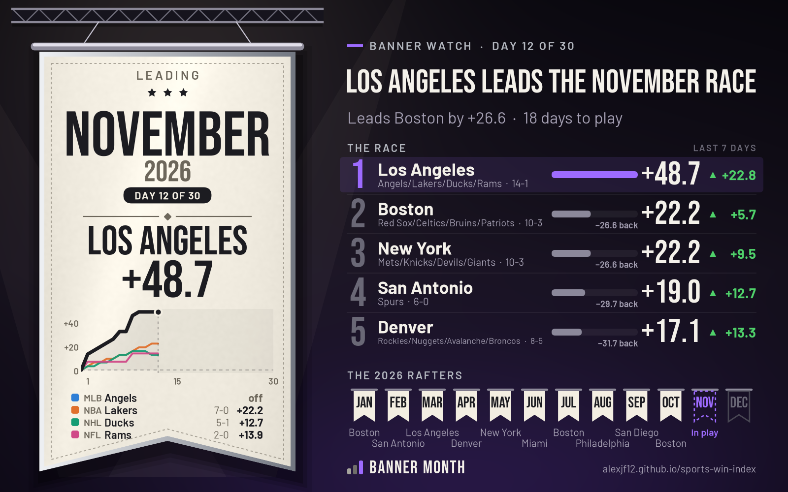

November banner watch — Los Angeles leads at day 12
Los Angeles is +48.7 weighted, +26.6 ahead of Boston, with 18 days to play
- Leading
- Los Angeles: Angels/Lakers/Ducks/Rams — 14-1, +48.7 weighted
- Closest chaser
- Boston: Red Sox/Celtics/Bruins/Patriots — 10-3, +22.2 weighted
- Banners since 2010
- It would be #38 for Los Angeles
- Last month's banner
- Boston, +36.1 in October 2026
| Place | City | Teams | Record | Weighted |
|---|---|---|---|---|
| 1 | Los Angeles | Angels/Lakers/Ducks/Rams | 14-1 | +48.7 |
| 2 | Boston | Red Sox/Celtics/Bruins/Patriots | 10-3 | +22.2 |
| 3 | New York | Mets/Knicks/Devils/Giants | 10-3 | +22.2 |
| 4 | San Antonio | Spurs | 6-0 | +19.0 |
| 5 | Denver | Rockies/Nuggets/Avalanche/Broncos | 8-5 | +17.1 |
